Agent-native 开发 [08-Raw/26生成式软件工程/NJU]
把 agent 开发拆成三件事：Ralph loop 怎么把长任务变成状态机、CI/CD 门禁为什么在 agent 时代更值钱、以及 DeepSeek Harness 如何用一套「文档配对 + 门禁」把 AI slop 挡在主干之外。
- UP：绿导师原谅你了（南京大学 蒋炎岩）
- 链接：https://www.bilibili.com/video/BV11LWw6VEHW
- 播放量：15426
- 时长：97:10
官方章节时间轴
| 时间 | 章节 |
|---|---|
| 00:00–11:09 | Review & Comments |
| 11:09–40:57 | Agent Loop |
| 40:57–59:32 | CI/CD |
| 59:32–1:37:10 | Agent-native 开发 |
课堂实录（按时间顺序）
00:00–03:34 · 实验二发布：把算力换成智力
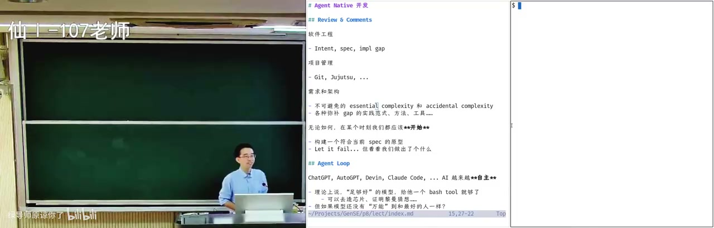
课程过半，这一讲进入 agent-native 开发；正好今天早上额度 reset，他习惯在离开办公室前挂上一个长任务让它继续跑，比如一道自己也不知道怎么证的数学证明，可能一次烧掉整周额度。第二个实验随 reset 发布，把第一个实验里的个人 agent 往前推一步；他自己已经把每天的例行 job 迁到 GrokBot——每天早上给小朋友生成一个 podcast（背后是 Claude Code 的 Opus 5.5），以及一份调过 prompt 的 morning paper 和 github trending 推送。实验的路线是在「算力换智力」上再往前推一点：agent 有长程任务能力，但解决问题的直觉差一些，这点很像他带过的博士生。
03:34–06:40 · 两个模型互相挑刺更有效
他潜伏在 Humanize 的群里，看他们烧了大量 token 试 multi-agent 协同，最后的结论是让 GPT 和 Claude 互相 review、互相挑刺——两个模型带不同的偏见，在宽度优先搜索里容易岔开，比一个模型一路走到黑更容易在几轮之后找到更好的 solution。实验还要求把知识库做深：除了第一个实验里那个 database，还要放作业、奖学金申请、简历、研究论文、博客、github 项目和书里摘的片段。他明说实验是开放式的、框架很简单，摆烂不做也能过，但只有真的跑过、观察过 agent 的 trajectory，才会得到只有自己才有的体会。
06:40–11:20 · 软件工程是从意图到实现的搜索
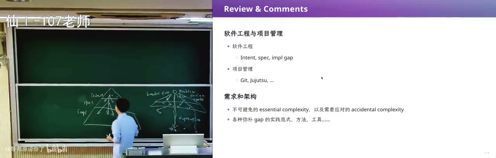
回到软件工程本身：从 intent 到 spec、spec 到 implementation 每一步都是一对多，人只能在意图空间里采样一个点，于是需求阶段靠访谈和 checklist 跟甲方对齐，spec 阶段跟有经验的架构师讨论用不用 event sourcing（最近还有开发者公开说他们不用），UML 建模则在项目早期就把设计空间约束住。AI 带来的最大能力是你随时随地可以让它往下生成一个版本，然后比较这一版是变好还是变坏，坏了就再讨论再生成——他实际开发时开四个终端放四个 agent，再多自己的大脑就跟不上输出速度了。需求如果能干净地拆成两个 subsystem，就可以并行开两个 agent 分别推进。
11:20–15:00 · 从幻觉到只要一个 bash 工具
有了这个能力就需要 agent loop，于是回头看这条路：2023 年 ChatGPT 和 GPT-4 幻觉很严重，说着说着就不知道在说什么，也没有今天这种思维链；最早一批 coding agent 里的 Devin 号称能自主解决数学问题，大家还只是观望。ReAct 式 agent 学会自主调用工具之后，理论上只要模型足够好、并且给它一个 bash，它就能造芯片、证明黎曼猜想——早期 UNIX 时代的大师们，也是在一个 shell 里跟各种工具交互。当然现在的模型还没到万能，所以才需要在外面套一层 loop。
15:00–21:00 · 一百五十行的 Agent 演示
他现场拆了自己那个约 150 行的 agent：bash tool 是一个合法的 Python object，可以序列化成 JSON（type、name、description、parameters 里一个 command），对应一个 run_bash 直接执行；主循环是 while——读终端输入、build messages、调 deepseek 的 chat completions，没有 tool call 就直接输出，有就把参数取出来跑 bash，再把 tool_call_id 和 output 塞回消息。他让它生成一个「生成式软件工程简介」的 HTML 卡片并在浏览器里打开，结果它自己开了两个浏览器窗口，还截图问他「你满意吗」。这里也暴露了产品级问题：timeout 是硬编码的，他在教育网访问 GitHub 时被误杀，直到肉身翻墙、看到 git clone 能跑满网卡带宽，才承认自己 overfit 了那个环境。
21:00–26:20 · 同一个 prompt 反复丢给它
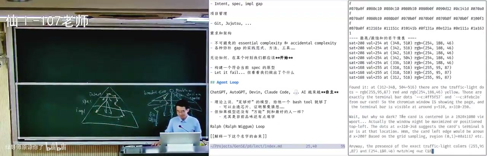
他顺手把这个白板模型的行为收掉，说明 harness 就是把模型能做的事约束在你认为合适的范围里；今天的版本答案是 Ralph loop，名字借自《辛普森一家》的 Ralph——有点笨、有点可爱，但从来不放弃，整个思路三行就写完：把同一个 prompt 反复丢给 Claude，检查、修改，直到无法改进。GPT 给的总结是 the prompt is the same but the world changes。但真实模型还有两个麻烦：上下文里一旦加载了你的 slop 代码，它会有强烈的舔狗倾向去把烂代码扶起来，而不是冒着行为不一致的风险重构；而你作为导师可以说这代码零分、再拿这种代码来就别见我，学生能理解并推翻架构，模型不会。
26:20–31:00 · 开发就是一台状态机
真实模型的第一道麻烦是上下文装不下：跑长任务时 codex 会突然 compact，等在那里、用量急剧上升，压缩之后通常还有一段降智期，最近有把上下文往 500K 提的说法。顺着这个思路他把一切理解成状态机：workspace 就是状态，一轮 loop 是一次状态迁移，迁移完可以 git commit 当检查点，于是长任务不再一把梭，而是可以随时停下来检查。因为这是非确定的状态机，同一个状态下可以换不同的 action——GPT 干一轮、Claude 来 review、DeepSeek 干活，也可以每周固定跑一次 code review 看项目有没有变成 AI slop，有就让重构 agent 把 slop 删掉再重新实现。
31:00–35:42 · 并行子 agent 与搜索树
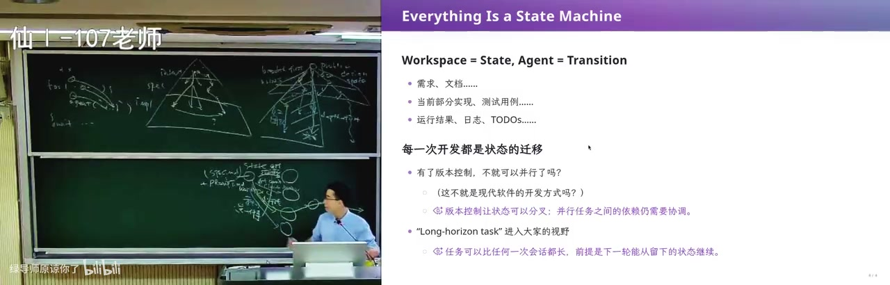
状态可以分叉也可以合并：A 模块的重构和 B 模块的重构交给两个 agent 并行做，再 git merge 成一个提交，这就是搜索树；模型厂商看到 loop 能完成更强的任务，就把单次 session 的能力再调高，外面再套一层 loop，他说这叫左脚踩右脚开始上天。他自己也写了一个非常简单的 Ralph loop，由一段 prompt 驱动：每轮先检查当前状态、只推进一个明确步骤、未完成就把下一步写进文件、全部完成才输出 RALPH_DONE，外层脚本看到 DONE 就停。现场用它调研「世界上最好的编程语言」，中间它试图上 arxiv 下论文、访问 google 会 timeout，几轮之后给出 RALPH_DONE，结论是一句话：不存在绝对最好的语言。
35:42–40:57 · 两张名片：直出与 loop 版
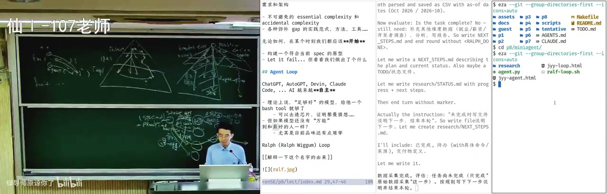
为了对比，他让两个 agent 用同一个 prompt 各做一张「属于我的名片」：一把直出的那版做了玻璃动效、还塞了一个 macOS 终端窗口，但邮箱是错的、学校也不是 NJU；loop 那一版朴素得多，写着「计算机学院副教授」，邮箱和 github 都是对的。他承认这有随机性，但同一个模型投入算力和 prompt，最后结果差别确实很大；网上那些现成的 prompt 和 skill 复用下来往往还是自己写的最懂你，因为长期磨合之后你才知道什么时候该放它去做、什么时候不该信它。顺着这个他补了一句：这个 design space 里没有绝对最好的设计，新模型发布时最好的做法是把系统提示词和 skill 全部拿掉，拿一个熟悉的任务做背靠背对比，很可能拿掉之后模型表现反而更好。
40:57–45:00 · 为什么每轮只推进一步
Ralph loop 里最关键的那句 prompt 是：每轮先检查当前状态、只推进一个明确步骤、然后验证并评估结果。原因就是 agent 会漂移——它可能脑子一热就做不该做的事，所以要在状态迁移处停下来 wait，用另一个模型 review 这次提交，或者跑测试、跑检查脚本，这样能一定程度上阻止状态漂移。这个想法并不新，软件工程里有两条老公理：机器永远是对的，你的代码永远是错的；人会想「我就改一行」「循环变量从 1 改成 0 应该没事」「样例过了可以交 OJ 了」，实习生推一个 PR 就把生产系统挂掉。于是每个状态后面都加一次检查，检查不通过就拒绝这次 loop 结束——恭喜你，你发明了二十年前那个叫 CI/CD 的东西。
45:00–49:20 · 把门控写进脚本和 hook
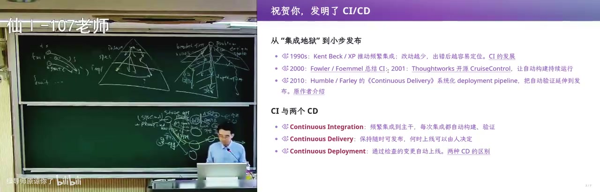
既然不相信实习生，就把所有门控写进脚本，而且不能让他自己去运行，于是有了 .github 里那一大堆看不懂的 workflow 和配置。好消息是 commit、push、PR、merge 到 protected branch 这些事件上都能挂 hook——他之前让 agent 挂了个钩子，每次需要他输入时会「叮」一声，代表输出结束；今天在大语言模型时代，那些手写的 yaml 和 GitHub 的 DSL 再也不用手啃，你只要有一个清楚的概念：在什么样的状态迁移时该做什么事。本地最基础的一层是 pre-commit，提交前先做一次编译和 lint。
49:20–52:44 · Lint 门禁与免费算力
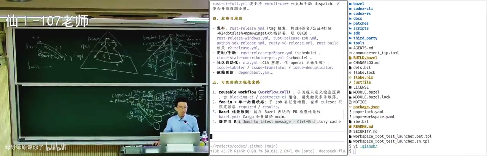
先说 lint：指的是不运行程序、只做静态分析就能发现的问题——缩进、换行、空格，刚开始学程序设计就写出 a=1 这种代码，他作为多年码农会生理性不适。它是软件工程最基础一级的守门员，这一关过不了就不必谈软件工程了。再往上，GitHub 可以接 Docker 后端，gitee 也有免费容器但排队慢；GitHub Actions 每月大概有 2000 分钟免费算力，这份羊毛足够你在 action 里养一个 Claude Code：push 触发拉起 Claude Code、改完再提交、再触发 hook，只是要小心两个流程的衔接，否则容易失败。
52:44–56:11 · Agent 是更不可信的开发者
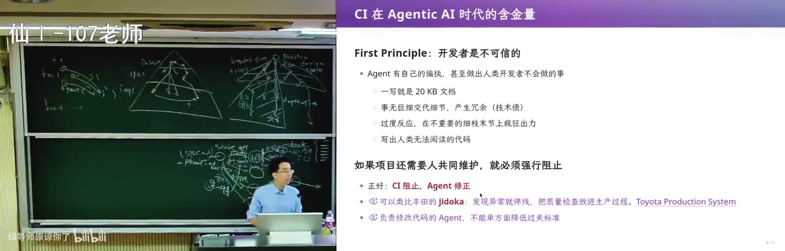
CI 的第一性原理是开发者不可信，而 agent 是最不可信的那种开发者，因为它和人类天生不对齐：你说写个文档，它直接 checking 一个 20K 的文档，你看了两行就掉进无穷琐碎的细节，根本读不下去。更麻烦的是它会把自己的思考过程、agent loop 里踩的坑一条条写进 doc.md，于是 doc.md 和 implementation.py 之间多了一层看不见的关联——下一次换了 agent、上下文被压缩，它不记得这两份东西要保持一致，改了代码不改文档，整个项目就开始滑向 slop 的崩溃边缘。它还会过度反应，在细枝末节上疯狂出力，对 design space 里最重要的选择视而不见；做一个网页就疯狂截图、用 chrome dev tools 把上下文填满。所以最近 github trending 上的做法是让 sub agent 只回一段最简短的 summary，不要回传截图。
56:11–1:02:00 · 文档不许超过一千字
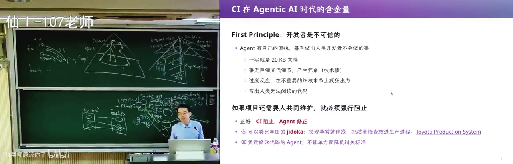
他讲了一条关于狗和超级智能的推文：人类对狗来说就是超级智能，狗不理解人类怎么工作，但世界上有 10 亿只狗活得很开心——对应的就是「把任务丢给 AI 然后就不管了」。只要今天还要人和 AI 共同维护一个项目，就必须强行阻止前面那些事，因为一旦成了 slop 就永远回不了头：那份文档你根本改不动，连定位到想改的地方都做不到。所以 CI 可以设硬条件，比如「文档不能超过 1000 字」，直接 len 一下字符串就 fail，永远合不进主干；agent 能看到这些检查，也会自己在本地跑 pre-commit，但上下文一膨胀，它的注意力就不断涣散，项目到十万行级别就开始滑坡。这种规则在人写文档的时代没人会设，因为人积累 slop 的速度远没有 AI 快。
1:02:00–1:05:00 · Codex 公开的三层 CI
接下来是 OpenAI 那篇 harness engineering：从空的 git repo 开始，人已经不写代码，但人负责把环境约束、反馈和验证机制定义好，比如 push 之前必须确认铭文和 API key 没有泄露——Cocoon 逆向时 source map 泄露，就说明那道门控没有写。公开出来的 CI 分层很朴素：PR 时跑快速门禁，main 上做全量认证，最后发布打标签；快速门禁里就是 rustfmt、clippy 这类 lint，加上格式拼写和 bad smell——文件太大、函数太大、依赖检查。文章自己也承认 whatever still learning，要按年维护的话 agent 的 flow 还没想好，所以他的判断是只靠 lint 这一层项目一定崩，close AI 背后必然还有一整套没公开的 agent-native 门控；而 Anthropic 那边 16 个 agent 并行编译 Linux 时，撞上同一个 bug、重复修复、互相覆盖改动。他顺便讲了自己项目的做法：architecture.md 能自动生成一张架构图。
1:05:00–1:09:00 · 架构图看板与 DSH 标杆
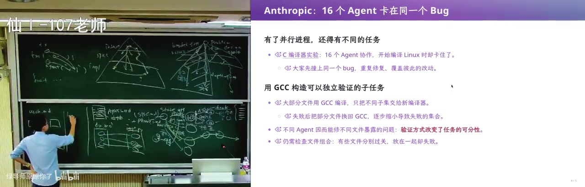
所以并行 agent 之上还需要调度，需要一个 orchestration agent 来协同、让人看得到进展；那张架构图上，agent 的 workflow 里有个 log book 记每个 task 是完成还是 ongoing，agent dashboard 把进行中的任务按百分比标上去、推到 GitHub 的 CI 里，他作为总架构师只看这一张图，就知道几个学生各自带着几个 agent 做到哪儿了，他也想试试 GrokBot 那样由一个 master agent 统一派活。接着他说 DSH 是 agent-native 开发里标杆性质的项目——中国人写的项目就用中文写文档，因为读中文比读英文快大约一倍，这一倍能让他从海量文字里快速提取关键信息、定位到想找的地方。但项目要走向世界，就得同时维护中英文两份文档，那几乎是地狱。
1:09:00–1:14:00 · 中英文档的三件套配对
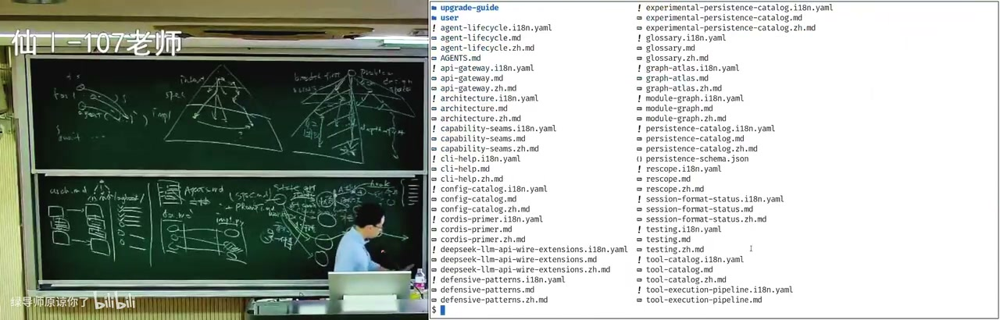
DSH 的办法是「三件套 + 门禁」：每篇文档在同目录下有三个兄弟文件——中文 markdown、英文 markdown，以及一个 i18n.yml，i18n.yml 两侧各存一个 hash，谁新谁旧由 hash 决定，因为 git 历史里永远知道谁变了、谁先变了。一旦发现新旧不匹配，就让 AI 翻译；翻译是 patch-based 的，先看这份文档改了什么，再把另一份对应位置的东西也改掉，其他地方保持一致，一致性由 pnpm run verify:translation-parity 校验。代价是牺牲了目录的干净，所以在 VS Code 里把这些兄弟文件折叠或忽略掉——中国人只看中文文档，英语母语者只看英文文档，开发体验和普通仓库一模一样。
1:14:00–1:18:20 · 人感样本与按需加载的规范
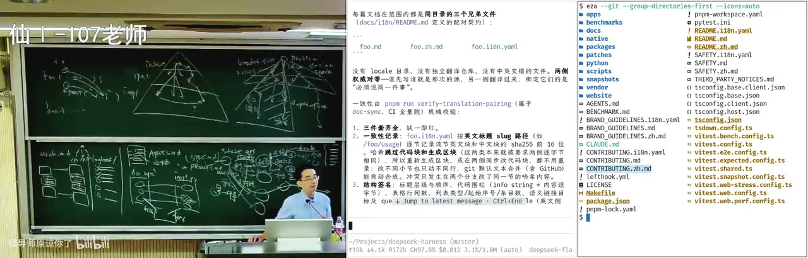
i18n 目录下面还有一堆规范：一份 style samples 用来校准「人感」，读起来还是有 AI 味，但项目长到这个体量人还敢说能维护，说明下了很大功夫；这些规范都按需加载，不会全塞进 agents.md，否则上下文暴涨、连 100 万也装不下，只有需要翻译或写文档时才会 load。还有 terminology 约定本仓库中英术语的统一译法，可以用门控粗查：同一段里 AI 和「人工智能」的出现次数差不超过 ±3，当然决策边界要小心，别把本来能过的筛掉。不约束 agent 的时候，它会以光速生产 slop。
1:18:20–1:23:00 · 从 git 历史看门禁怎么长出来
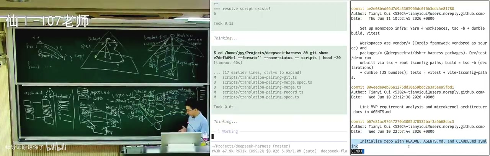
他干脆用 git 历史把这一整套机制的诞生还原了一遍：2026 年 6 月 10 号晚上 11 点从一纸空仓库开始，6 月 25 号先有 terminology，只有词汇约定、没有任何机制；7 月才引入配对契约，7 月 3 号定下对等权威和 hash，马上就被推进自动化流水线。这不是全新发明——Python 的 docstring、Java 的 javadoc、C++ 的 doxygen 都是让代码和文档天然保持一致，agent 时代只是把人的工作迁移给 agent。文档还有预算门禁：root 不超过 1960 字、architecture 不超过 2400 字，专门防 AI slop 无限堆积；agent notes 则分 implemented、proposed、rejected、archive 四态，相当于它们的 log book。
1:23:00–1:28:00 · 代码块必须逐字出现在源码里
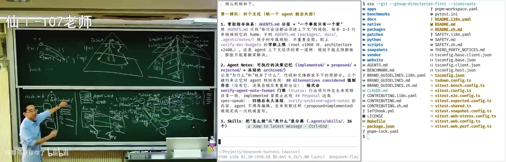
他说今天还有个变化：模型开始生成动态的 UI 组件、HTML 小卡片，把图片嵌进文本流程里，读起来舒服很多，未来 web UI 很可能成为主流；DSH 则把各种机械门禁从「怎么做」里分离出来做成 skill，比如 doc sync、static、coverage、snapshot 这些。代码评审分三段：本地自证、CI 门禁、人工评审，而且还有分数，新增文案必须通过语义评审。文档层面除了中英一致，还要求所有链接和交叉引用合法——整个仓库找不到一个不合法的 link；文章里如果出现一个 interface 代码块，就要求它逐字原封不动地出现在某个源文件里，代码改了接口没改文档会被直接拦下。他们把这个想法又推了一步：code block 带执行语义，可以在代码块里 specify 这段东西要出现在什么位置、以什么形式和另一个东西关联，等于给 markdown 的 fenced code block 加了轻量校验。
1:28:00–1:32:12 · 门禁加起来才把项目维护住
这些 verify 一个个看都很小：translation parity、UI、application entry points、type equivalence（文档里粘贴的类型必须与源码一致、不允许漂移），但全部加起来，这个项目才被维护住了。代价是每次提交前要跑大量门禁，可你其实不写代码、大部分时间是监工：在 plan mode 里和 AI 一起把要做什么、做到什么程度搞清楚、改 log book，这时候代码一行没动过，就不用跑这些 CI。项目总有烂掉的一天，他给学生的方子是开一份新的空白仓库、把旧功能一点一点迁进来保持好架构——社交网络先驱 Friendster 在 pre-LLM 时代就是迅速吸引大量用户然后崩掉的例子。而他真正看到的威胁是：你不做很多次、不失败很多次，就不太可能把一个东西真正做好，没有 token 的学生尝试的机会就不如别人多，这就成了一条斩杀线。
1:32:12–1:37:09 · 斩杀线、订阅与大学的崩溃
这条线具体是这样的：读完博士还不如 agent 好用，用人单位会选一个 senior 给他无穷的 token，而不是花四五年培养一个 PhD——回报点太长，公司可能早就黄了。他顺手报了自己的账：一个 20 美元的订阅，Opus 5.5 的额度其实挺够用，而且真的很强，本科生要达到那个水平非常困难。再往下是他的社会观察：大学不以盈利为导向，但考核老师的指标是科研经费，优青、杰青、院士是一套金字塔，高校其实也在资本化运营，所以照这个逻辑大学肯定要崩溃，反倒是学而思那种靠样板课——花百万雇清北的天才设计模板课、老师加 AI 执行——可能是新形态的大学。最后他感谢开源社区，说自己今天这些理解都来自开源社区里看到的好东西，让大家从 DSH 这种「一切皆插件」的 loop 看起。
讲了什么
画面解读： 开场是实验安排与自用工具：每天给小朋友生成播客、早上收资讯推送。他借带博士生比喻模型——有很强 DFS 倾向，而设计空间里很多分叉在浅层；Humanize 烧了很多 token 后发现，最有效的协作是让 GPT 与 Claude 互相 review。
开场是课程实验安排：第二个实验做 agent loop，把第一个实验里的个人 agent 往前推一步。他顺手讲了自己怎么用 GrokBot：每天给小朋友生成播客（背后是 Claude Code 的 Opus 5.5）、每天早上收 morning paper 推送、看 GitHub trending。他借「带博士生」比喻模型：模型解决问题有很强的 DFS 倾向，找到一个 idea 就一路做下去，但 design space 里很多分叉在浅层，宽度和深度要平衡。Humanize 团队烧了很多 token 后发现，最有效的 multi-agent 协作是让 GPT 和 Claude 互相 review、互相挑刺——不同模型带不同偏见，比同一个模型一路走到黑更容易岔开。
他把软件工程画成 intent → spec → implementation 的搜索：每一步都是一对多，靠访谈、checklist、架构师讨论、UML、IDE、git worktree 这些工具收敛。AI 的价值是让你在任何一个阶段都能立刻生成一个版本，比较「变好还是变坏」，再迭代；需求能拆成两个 subsystem 就并行开两个 agent。他自己实际开发时开四个终端、四个 agent，再多大脑就跟不上输出速度。
画面解读： 梳理 agent loop：从早期幻觉一路到今天的「版本答案」Ralph loop——同一个 prompt 反复丢给 agent，每轮只推进一步、验证后把下一步写进文件，直到输出 RALPH_DONE 才停；现场还拆了 150 行 agent 的主循环。
然后是 agent loop 的历史：2023 年 ChatGPT/GPT-4 幻觉严重，Devin 早期号称能自主解决任务；ReAct 式 agent 靠工具自主行动。今天 harness 的「版本答案」是 Ralph loop，名字来自《辛普森一家》的 Ralph——有点笨、有点可爱、但从不放弃。它简单到三行：把同一个 prompt 反复丢给 agent，让它检查、修改，直到无法改进。核心是「prompt 不变，但世界在变」。
他现场展示自己 150 行的 agent：bash tool 是一个合法 Python object，可序列化成 JSON（type/name/description/parameters），run_bash 直接执行；主循环是 while：读终端输入 → build messages → 调 API → 没有 tool call 就输出，有就执行 bash、把 tool_call_id 和 output 塞回消息。这个 agent 真能用，也会暴露产品级问题：timeout 是硬编码的，换到教育网访问 GitHub 就会被误杀——他自己「肉身翻墙」后才发现 clone 能跑满带宽，承认自己 overfit 了环境。他还让这个 agent 生成 HTML 卡片、开浏览器、截图问他「你满意吗」，说明白板模型的行为需要 harness 约束。
Ralph loop 的关键 prompt 是：每轮先检查当前状态，只推进一个明确步骤，验证并评估结果，未完成就把下一步写进文件，全部完成才输出 RALPH_DONE；外层脚本看到 DONE 就停。他把开发看成状态机：workspace 是状态，一轮是一次状态迁移，可 git commit，可停下来检查；同一状态可以选不同 action（GPT 干活、Claude review），也可以并行改 A/B 模块再 merge，于是得到搜索树。这样长任务不再一把梭，能防上下文漂移。他现场对比同一个「做一张我的名片」prompt：一把直出做了很花哨的玻璃动效和 macOS 终端，但邮箱错、也不是 NJU；loop 版本朴素，邮箱和 GitHub 都对——当然有随机性，但算力和 prompt 的投入确实改变结果。
画面解读： CI 的第一性原理是「不要相信开发者」，机器永远是对的，于是提交、合并、发布层层设卡。而 agent 更不可信——它会把思维链塞进 doc.md、为一个网页疯狂截图、在细节上过度出力，所以要让它只回简短 summary。
接着是 CI/CD。软件工程的老公理是「机器永远是对的，你的代码永远是错的」，开发者不可信：实习生改一行、跑过单元测试就提交，生产系统就挂。所以要在每个状态迁移后自动检查：pre-commit 编译/lint、pre-push、PR、merge、release 层层设卡。lint 是最基础的守门员；GitHub Actions 每月约 2000 分钟免费算力，他甚至在里面养 Claude Code。CI 的第一性原理就是「不要相信开发者」，而 agent 是更不可信的开发者：它会写 20K 的文档、把思维链和踩坑过程全塞进 doc.md，导致 doc 与 implementation 的隐式关联在上下文压缩后失配；会为一个网页疯狂截图，把图片一直留在上下文里；会在细枝末节过度出力，对 design space 里最重要的选择视而不见。所以要让 sub agent 只回简短 summary，不要回传截图。
他举 OpenAI 的 Codex 为例：文章说他们从空 git repo 开始、人不写代码，人负责定义环境约束、反馈和验证机制；公开的 CI 只有 lint、测试、发布三层。蒋炎岩的判断是：只靠这些门控项目一定崩，Codex 背后必然还有一整套巨大的 agent-native 门禁没公开。Anthropic 也遇到 16 个 agent 协作编译 Linux 时撞同一个 bug、互相覆盖改动，所以需要 orchestration agent 调度。他们自己的项目用 architecture.md 自动生成架构图，log book 记 task 状态，agent dashboard 把进行中的任务按百分比标在架构图上，总架构师看一张图就知道进展。
最后是 DeepSeek Harness 的 agent-native 实践。因为中文读得比英文快约一倍，DSH 同时维护中英文文档，这就是灾难；它用「三件套 + 门禁」：每篇文档同目录下有中、英、i18n.yml 三个兄弟文件，i18n.yml 两侧存 hash，谁是权威由 hash 新旧决定，翻译是 patch-based，只改差异；pnpm run verify:translation-parity 检查一致性。文档还有预算：root ≤1960、architecture ≤2400（防止 AI slop 无限堆积）；agents.md 分层、按需加载 skills；agent notes 分 implemented/proposed/rejected/archive；code review 有评分；code block 里的 interface 必须逐字出现在某个源文件里，代码块还带执行语义；terminology 统一术语；style samples 校准「人感」。这些门禁单看都很小，加起来才把项目维护住。DSH 的提交史从 2026-06-10 23:00 开始，6 月 25 日先有 terminology 约定，7 月才有配对契约和门禁——是逐步长出来的，不是第一天设计好的。
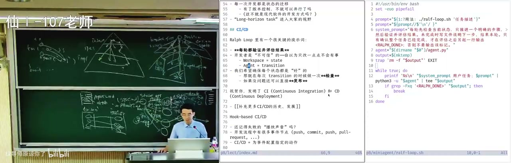
画面解读： 讲 DSH 的做法：中英文档靠「三件套 + 门禁」——同目录放中、英、配置文件三个兄弟，hash 新旧决定谁是权威，翻译只改差异并由 parity 脚本校验；文档有字数预算防 slop，代码块里的 interface 必须逐字出现在源文件。
结尾是他的社会观察：不做很多次、不失败很多次，就很难把东西做好；没有 token 的学生尝试机会更少，「没有 token 应该退学」虽是玩笑，但斩杀线真实存在——公司宁愿给 senior 无限 token，也不愿花四五年培养新人；他甚至放话说大学会崩溃，资本化运营的样板课机构可能是新形态。
关键点
- Ralph loop 的全部精髓是「同一个 prompt + 每轮只推进一小步 + 强制检查 + 明确的 DONE 信号」，五行脚本就能实现。
- 开发即状态机：workspace 是状态，一轮是一次迁移，git commit 是检查点；并行 subagent 就是搜索树的分叉与合并。
- agent 比人更不可信：它会膨胀文档、把截图塞满上下文、在细节上过度反应，所以门禁要可执行、要能自动 fail。
- DSH 的文档一致性靠 hash 判定权威 + patch 翻译 + parity 校验，不是靠人肉同步。
- 「文档不超过 1000 字」这种人类不会写的 CI 规则，在 agent 时代是有效的防 slop 手段。
- 他明确说公开的 Codex CI 只是冰山一角，真正的 agent-native 门禁不会开源。
为什么值得看
给用 coding agent、但项目开始「越跑越脏」的人看。Ralph loop 和「状态机 + 门禁」今天就能改工作流；DSH 的文档配对、预算、code block 校验，长期项目可以直接抄。坑是信息密度大、demo 有随机性，别把名片对比当严格实验。
我的一句话
这场的硬货是「别信 agent，给它装门」——但更有意思的是他顺带承认了：连他自己都会 overfit 网络环境，所谓「智能」很多时候只是没被换过环境。